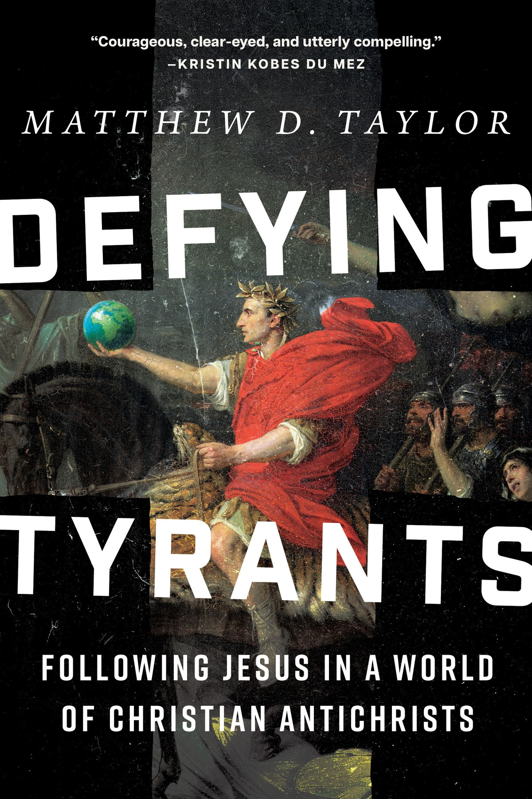
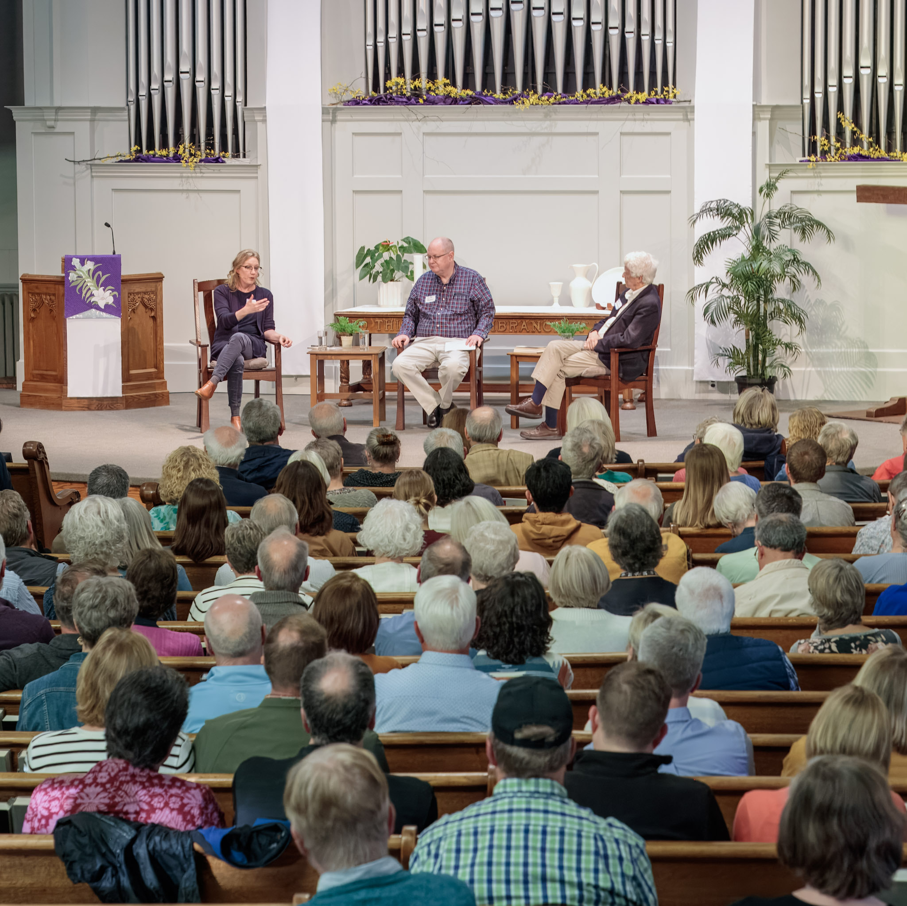
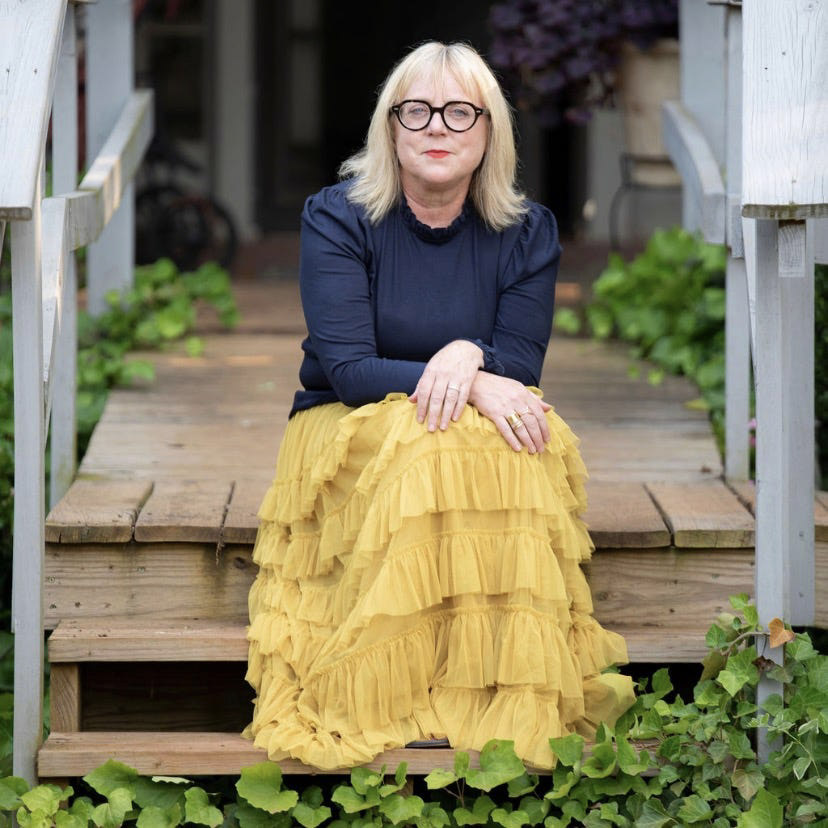
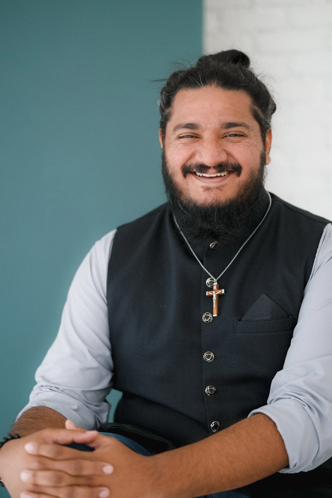

Defying
Tyrants
Tyrants
Matthew D. Taylor
Thu, Oct 8 · 7 PM ET

 Free to be Faithful
Free to be Faithful
Free to be FaithfulFollowing Jesus in a World of Christian Antichrists

Rooted without becoming rigid.
Bold without becoming belligerent.
Faithful without becoming fearful.


Toronto | Online
A graduate school in the reformational Christian tradition, cultivating wisdom at the intersection of philosophy, theology, and the disciplines that shape our world.
Faith, Deconstruction, and Spirituality through Music
Hannah Arendt on Resistance, Hope, and the Power of the Possible
Recovering a Biblical Category for a Christian Crisis

More encounters with the good, the true, and the beautiful

Mission and witness through a Jesus-shaped lens